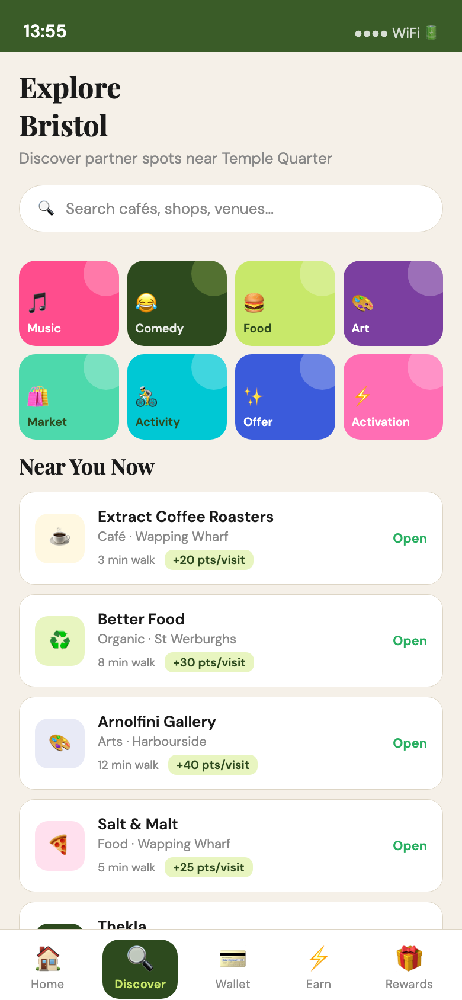
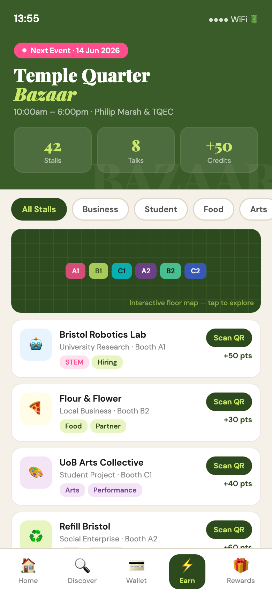
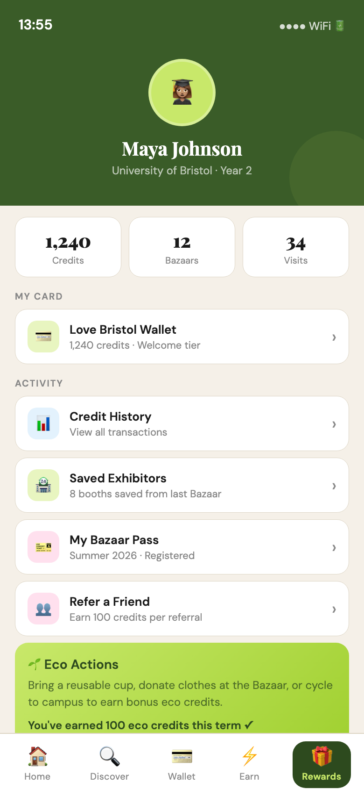

Love Bristol
A rewards app that gives students a reason to explore Bristol's newest district.
Grade awarded for the project
Positive feedback from Bristol Business Improvement District
A working, installable app prototype that also runs offline
The problem
Bristol Business Improvement District (BID) is the levy-funded body that improves Bristol's business districts. It asked our team to create a "city welcome" for the Temple Quarter and Philip Marsh regeneration area. The brief was deliberately broad, so defining the problem was part of the work.
Temple Quarter's identity isn't fixed yet. Acting early can shape how people see it before opinions harden, and nearby communities were already pushing back against the development.
Our research found that the area doesn't feel unwelcoming because it lacks infrastructure. It lacks social activity, identity and reasons to stay. Students described it as "empty, bland, a construction site", and many had never been.
Problem statement: Temple Quarter lacks connection between students, businesses and the community, which means low involvement, limited footfall and a place that doesn't feel welcoming.
What I did
The team did the research, strategy and event concept together. I designed and built the Love Bristol app myself, turning the team's concept into a working prototype.
- Discover
Census data, BID plans and case studies from four other cities. A walking study of Temple Quarter, plus interviews with insiders and students.
- Define
Personas and user journeys. Six "How might we" questions narrowed down to one about integrating students into the area.
- Develop
40+ ideas, clustered, voted on and scored. The first concept was a student mini-festival with a website prototype.
- Deliver
The Love Bristol app, launched alongside an annual fair, Temple Turnover, designed by the team.
The pivot
Events only have a short-term effect: people come, enjoy it and leave. Two things pointed us to a rewards app instead. Norway's deposit return scheme reaches a 97% return rate by rewarding a small repeated action, and the existing Love Bristol Gift Card had already made £184k in sales. Peer feedback settled it: "We don't even use physical cards nowadays."
Feedback also said our earlier website prototype was impractical on a phone, so I rebuilt it as a progressive web app that installs like a native app.
Key design decision
The credit system redesign
The first version of the rewards had a flaw that would have set partner businesses against each other. I redesigned the economics so every partner gains from the same scheme.
Before
25 points = % off anywhereEarn at one business, spend at another. One shop gives away the reward while a different shop gets the customer, which creates conflict between partners.
After
1,000-credit membershipReaching 1,000 credits unlocks fixed discounts at every partner. Credits renew every few weeks, so people keep coming back to stay a member.
Making it work commercially
BID answers to levy-paying businesses, so we positioned students as contributors to the local economy: more daily footfall, more varied spending and talent that stays in the area. Partners that invest more are featured more prominently, QR codes at each partner verify visits, and app analytics give BID live footfall data.
The product
Love Bristol is a single-page progressive web app with a service worker and web manifest, so it installs on a phone and works offline. I built it with Claude Code in VS Code.





Prototype with demo data. Best viewed on a phone.
- Home: what's on, wallet balance and quick ways to earn.
- Discover: browse by category and see partner venues near you, with walking times and points per visit.
- Wallet: credit balance, progress to the next tier and rewards to redeem. Earning actions include bringing a reusable cup (+15), shopping local (+25) and cycling (+20).
- Earn: an event page with a floor map, filterable stalls and a QR code to scan at each stall.
- Rewards & profile: stats, credit history, eco actions, refer-a-friend and GDPR privacy settings.
What I learned
- A broad brief is a research problem first. "Welcoming" turned out to be about social integration, which we only learned by walking the area and interviewing people.
- Feedback changed the product twice. It moved us from an event to a rewards app, and from a website to an installable app.
- Incentives need designing as carefully as screens. The credit redesign mattered more to the businesses than any visual choice.
What's next
We proposed measuring success through footfall and attendance, repeat engagement, redemptions and spend at partner businesses, and before-and-after perception surveys.
Next project
Personal Project Manager Agent →